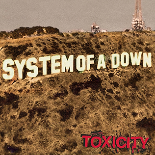
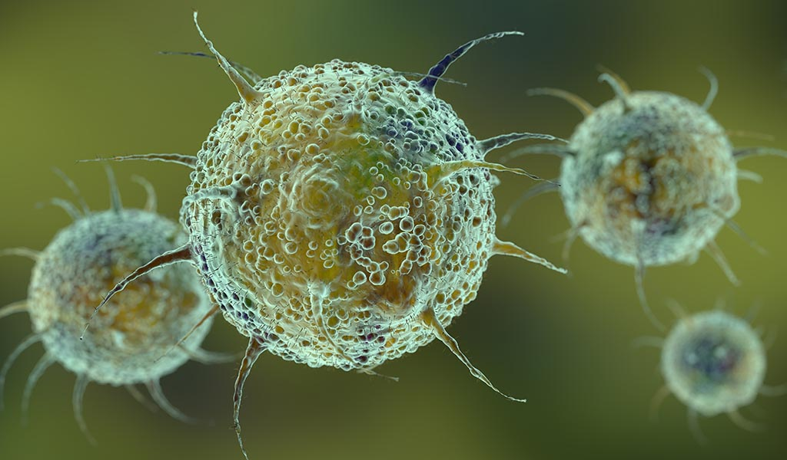
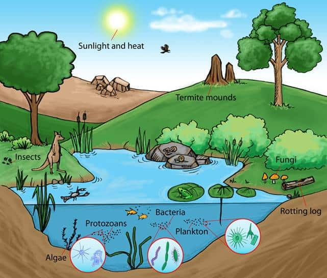
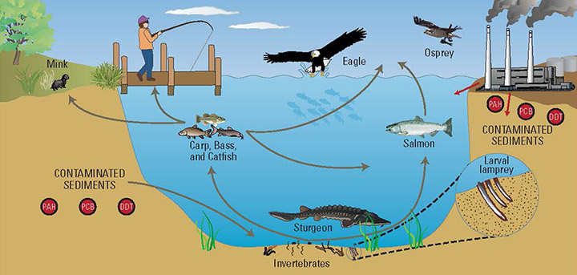
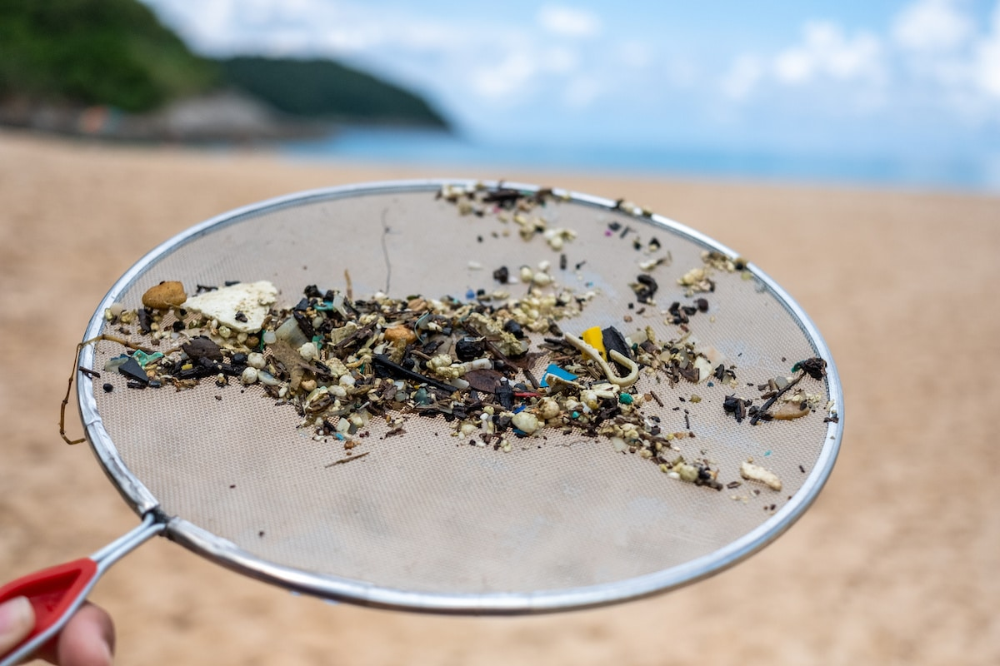

Impacts
Health Risks
Ingestion and Inhalation

Microplastics are found in food, water, and even the air we breathe. They can enter our bodies through inhalation or ingestion,
accumulating in tissues.
Toxicity

These particles can contain harmful chemicals, such as bisphenol A (BPA), phthalates, and other additives, which can leach
into our bodies. Some of these chemicals are endocrine disruptors, meaning they interfere with hormones and can lead to
reproductive, developmental, and immune system issues.
Transfer of Pathogens

Microplastics can also carry pathogens or toxic chemicals on their surfaces. When ingested, these contaminants may pose additional health risks.
Environmental Impact
Ecosystems

Microplastics accumulate in oceans, rivers, and soil, impacting wildlife and ecosystems. Aquatic animals ingest microplastics,
mistaking them for food, which can lead to malnutrition, reduced reproduction, and death.
Food Chain Contamination

Microplastics have been found in fish, shellfish, and other animals we consume, meaning they enter the food chain and eventually make their way back to humans.
Soil and Agriculture
Microplastics are also found in agricultural soil, often due to the use of plastic mulch and wastewater irrigation. These plastics
can disrupt soil health, affecting plant growth and the organisms that live in the soil.
Impact on Water Quality
Water Pollution
Microplastics are prevalent in water bodies worldwide, impacting water quality and marine life. They can attract and concentrate
toxins, making them harmful to aquatic species.
Filter Systems

Microplastics are small enough to bypass many filtration systems, making them difficult to remove from drinking water and wastewater,
further contributing to environmental pollution and exposure risks.